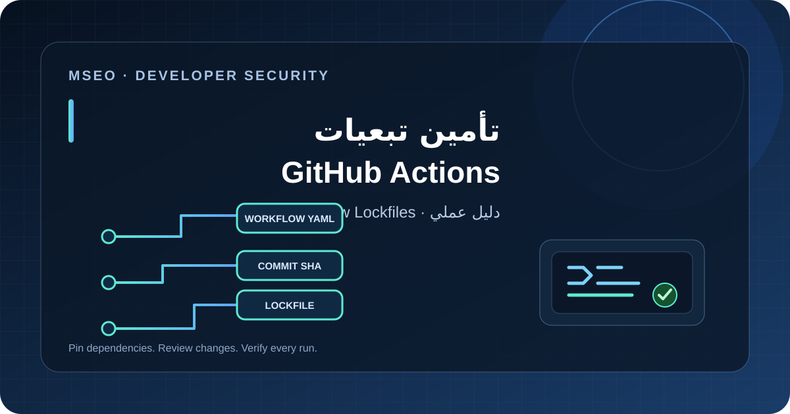

استكشف البرمجة
طوّر أساسياتك البرمجية، واكتب شيفرة أوضح وأسهل صيانة، واستخدم أدوات التصحيح لفهم الأخطاء ومعالجتها.
جميع المقالات في البرمجة
اختر مقالًا لقراءة الدليل كاملًا.
JavaScript للمواقع: تنظيم الكود وتقليل الأخطاء وتحسين الأداء
ممارسات عملية لتنظيم JavaScript وتحسين الصيانة.
اقرأ المقال البرمجةJavaScript للمبتدئين: الأساسيات التي تحتاجها لبناء مواقع تفاعلية
دليل عملي لفهم أساسيات JavaScript من المتغيرات والدوال والمصفوفات والكائنات إلى DOM والأحداث وبناء أول تفاعل في صفحات الويب.
اقرأ المقال البرمجةDebugging في JavaScript: دليل اكتشاف الأخطاء وإصلاحها
دليل عملي لتشخيص أخطاء JavaScript باستخدام Console وDevTools وBreakpoints وNetwork وتتبع السبب الجذري قبل إصلاح الكود.
اقرأ المقال
البرمجةGitHub Actions Workflow Lockfiles: دليل تأمين تبعيات CI/CD
شرح عملي لملفات قفل تبعيات GitHub Actions وطريقة إنشاء actions.lock ومراجعته وصيانته مع Dependabot للحد من مخاطر تغيّر الوسوم والفروع.
اقرأ المقال البرمجة
البرمجةأساسيات أمان الموقع: قائمة تحقق عملية للمطورين
قائمة أساسية لتحسين أمان موقع الويب تشمل HTTPS وإدارة الأسرار والتحديثات والصلاحيات والتحقق من المدخلات والنسخ الاحتياطية.
اقرأ المقالأسئلة شائعة عن تعلم البرمجة
كيف أختار أول لغة برمجة؟
ابدأ بهدف واضح؛ فـJavaScript مناسبة لتفاعلات الويب، واختر غيرها وفق المجال المستهدف. ركز على الأساسيات والمشروعات الصغيرة.
كيف أستفيد من أمثلة الشيفرة؟
شغّل المثال في بيئة آمنة، وافهم المدخلات والمخرجات، ثم غيّر جزءًا واحدًا واختبر أثره بدل النسخ دون مراجعة.
ما أفضل طريقة لتصحيح الأخطاء؟
أعد إنتاج الخطأ، واقرأ رسالة الخطأ، وافحص القيم عند نقاط محددة، ثم اختبر إصلاحًا واحدًا في كل مرة.
طبّق البرمجة في تطوير الويب
انتقل من كتابة الكود إلى بناء المواقع وتحسينها باستخدام الأدلة والأدوات ذات الصلة.